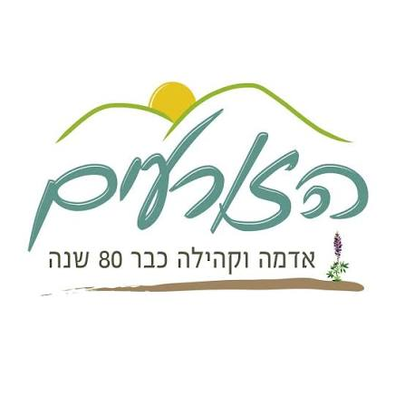
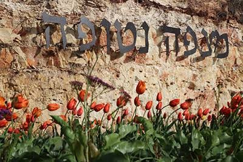
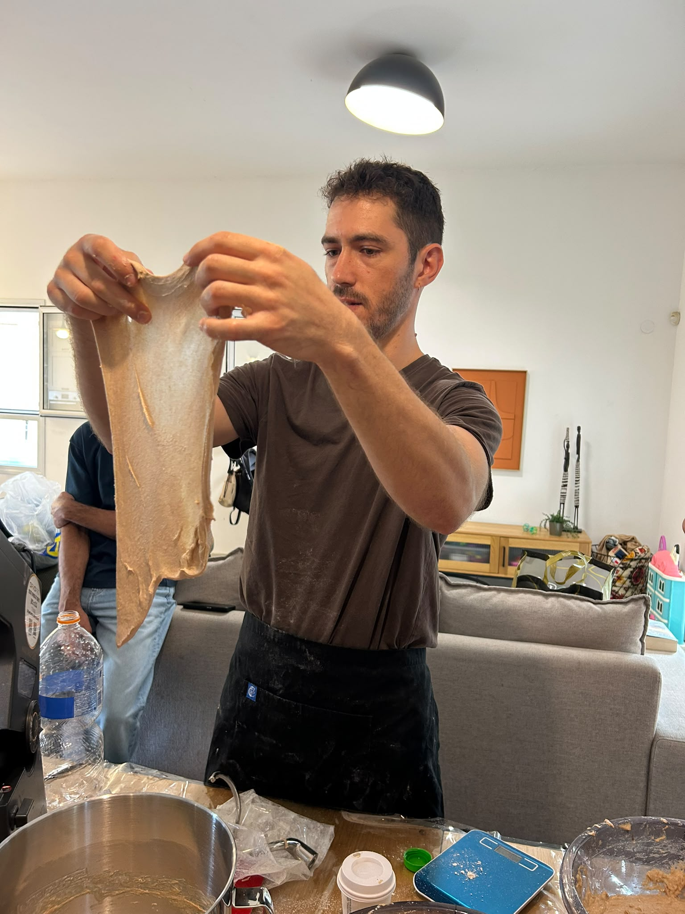

יסודות המחמצת והתסיסה
גידול, האכלה ותחזוקת מחמצת פעילה ובריאה, לצד הבנת תהליכי התסיסה הביולוגיים והשפעתם על המרקם והטעם.
כל היסודות להכנת לחם מחמצת אמיתי – אצלכם בבית
מפגש חווייתי ופרקטי של 3.5 שעות, שבו תלמדו ותקבלו את כל היסודות להכנת לחם מחמצת אמיתי אצלכם בבית!
את הסדנה מעביר ידידיה לוי, אופה ראשי במאפיית "אנשי הלחם – עובדי אדמה", עם מעל עשור של ניסיון ואפייה של מיליוני לחמים.
ידידיה מפשט את הטכניקות, מנגיש את כל הסודות ומבטיח שכל אחד ואחת יוכלו להצליח בקלות!
הסדנה מתקיימת בקבוצה קטנה של עד 10 אנשים, באווירה נעימה ויחס אישי.
גידול, האכלה ותחזוקת מחמצת פעילה ובריאה, לצד הבנת תהליכי התסיסה הביולוגיים והשפעתם על המרקם והטעם.
שיטות עבודה נכונות, פיתוח רשת הגלוטן, קיפולים, וטכניקות עיצוב להתפחה מיטבית.
חישוב מדויק של אחוזי הידרציה (אחוזי מים בבצק), התאמת קמחים שונים (נדגים על קמח כוסמין מלא) והשפעתם על מבנה הלחם.
התאמת תבניות אפייה, יצירת סביבת אדים בתנור הביתי, וטכניקות לחריצה ופתיחה נכונה של הלחם במהלך האפייה.
זיהוי גורמים למבנה דחוס, התפחת יתר או חומציות גבוהה, וכלים לתיקון ושדרוג התוצאה בבית.

הזורעים
מצפה נטופההייתה סדנה נפלאה. התוכן היה ברור, הלחם היה טעים וידידיה מעל ומעבר 😊
20:14המכירת תבניות מצוינת,
היה באמת מאוד מהנה ומלמד. עברו שבועיים לדעתי והכנו לחם כבר כמה פעמים ומאוד נהנים!
ידידיה בא בגישה נעימה ומאוד רגועה לכל הארוע של המחמצת וזה ממש מיוחד בעיני. אשמח להמליץ לעוד חברים.
תודה רבה.
אלוף!
היה ממש כיף! סדנה מלמדת, תמציתית וממוקדת. אווירה רגועה ונעימה.
ידידיה עשה מאמץ לא להתפזר ולעבוד מסודר תוך שהוא מסביר לנו את ההגיון של הכנת המחמצת וסדר העבודה
היי אחי, רק לציין שהיה סדנה מדהימה באלמגור. אני עדיין ב high היא הייתה בנויה נכון, מאוד פרקטית ומאוד מפוקסת תודה רבה. אני אשמח לדעת (בלי לחץ) איזה עוד סדנאות אתה מעביר והיכן תודה רבה,
22:48היה מדהים! חוויתי! בהחלט נירמלת את המצב... יאלה עכשיו נקווה שיצא טעים וטוב
18:05פרקטיקה, חוויה מעולה באווירה נעימה מאוד ,
הקבוצה בווצאפ עם ידידיה מעולה, ההודעות עוזרות לחדד וללמוד.
הפרקטיקה. הרגשתי שידידיה ממש הסביר איך להכין את הלחם בצורה שמשתלבת הכי טוב ביומיום יחד עם עזרה להבין מה עומד מאחורי כל ה״מיתוסים״, איך אפשר לשפר מעבר ולהתקדם וכמה שזה לא תורה מסיני.
בנוסף, ממש כיף שהוא מכר את התבניות שישדרגו את הלחם שעוד התחלתי להתנסות בו לפני הסדנא.
נחת וסבלנות, מענה לכל שאלה, תחושה שבאמת רוצים שנצליח
10:52ההסברים הקלים והפשוטים, ראינו בעיניים ונגענו בידיים וזה הקל מאוד על היישום בבית
17:28
ידידיה לוי הוא אופה ראשי במאפיית "אנשי הלחם – עובדי אדמה", עם מעל עשור של ניסיון ואפייה של מיליוני לחמים.
בסדנאות שלו ידידיה מפשט את הטכניקות ומנגיש את כל הסודות של עולם המחמצת, כך שכל אחד ואחת – מתחילים ומתקדמים – יוכלו לאפות לחם מחמצת אמיתי בבית ולהצליח בקלות.
בנימה אישית,
החלום שלי הוא שכל אחד יגשים את החלום שלו. אם החלום שלכם זה לדעת להכין לחם מחמצת בבית ולמלא את הבית בריח משגע אתם במקום הנכון. אני אלך אתכם יד ביד עד שתדעו לאפות לחם מחמצת אמיתי בתנור שלכם. ככה פשוט
לפרטים והזמנת סדנה אליכם – לארגון או לקהילה – שלחו לחיה הודעה בוואטסאפ:
חיה · 050-6732441
אפשר להתרשם גם כאן